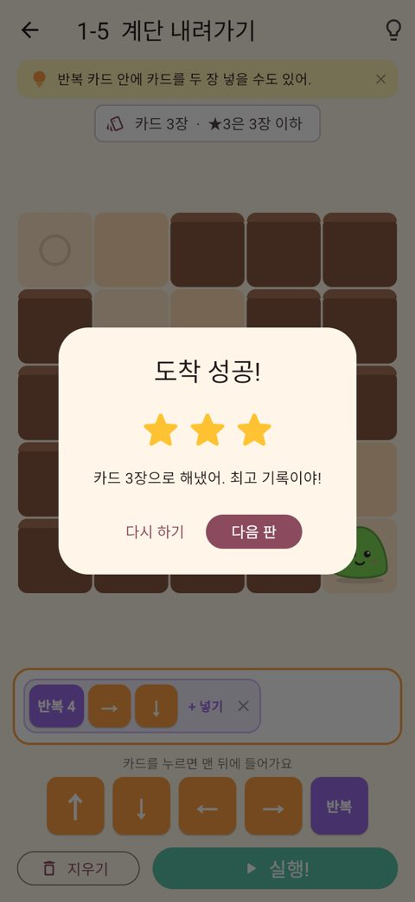

カードで道を組み、
数字を並べよう
芽の友だちコンコンに、矢印・くり返し・もしもカードを渡して、キャンディの箱まで連れて行ってあげましょう。数字ブロックを入れ替えて、ライバルのマランイより先に並べ替えよう。小学1年生から高校3年生まで、算数・数学の教育課程にそって10のワールドが続きます。
🃏 コマンドカードパズル🔢 並べ替えレース🍬 数字キャンディのたし算🗺️ 10のワールド⭐ カードが少ないほど星🎨 コンコンの羽の色🎁 すべて無料🙅 広告なし📴 オフライン



あそびかた
- ボードごとに、コンコンが目指すキャンディの箱があります。まず壁と数字キャンディの場所を見てみよう。
- 下のカードをタップして、命令を順番に並べます。同じ動きがくり返されるなら、くり返しカードに入れよう。
- 実行を押すと、コンコンがカードどおりに動きます。壁にぶつかったり、キャンディの合計がちがったら、直してもう一度。
- 箱に着くと、使ったカードの数で星がもらえます。もっと少ないカードで挑戦して、星3つを集めよう。
あそぶうちに考える力が育つ
🃏 順番に考える
矢印カードから始めて、くり返しカード、「ぶつかるまで」の条件カードへ。プログラミングの基本の考え方をパズルで身につけます。
🔢 並べ替えレース
決められた交換回数の中で、ブロックを小さい順に並べます。となり同士だけ入れ替えるボード、どの2つでも入れ替えられるボードで、それぞれちがう作戦が必要です。
🗺️ 教育課程にそったワールド
数字工場、かけ算農場、分数ベーカリーから、関数研究所、微積分そり山まで。学ぶ順番どおりに、パズルの中の数学が育ちます。
🎨 自分だけのコンコン
コンコンはモチノキの芽の友だち。羽の色を選んで飾れます。
アカウントも広告も課金もありません
会員登録、運営者のサーバー、広告、アプリ内課金、分析ツールはどれもありません。星や進み具合、羽の色は端末の中だけに保存され、運営者には届きません。子どもがひとりで遊んでも安心です。くわしくはプライバシーポリシーをご覧ください。
もうすぐ会えます
いま最初のワールドを仕上げています。App Storeに出たら、こことアップデート情報でお知らせします。
- まずiPhone・iPadで出し、Androidはそのあとに準備します。
- 10のワールドとすべての機能が最初から最後まで無料です。内容を見る
- 広告、アプリ内課金、ガチャはありません。
- ヒントだけは1日2回まで。自分で考える時間を大切にするためです。
- アプリは今のところ韓国語のみです。英語と日本語を準備しています。
今日は何枚のカードで
コンコンを連れて行けるかな？ 🍬